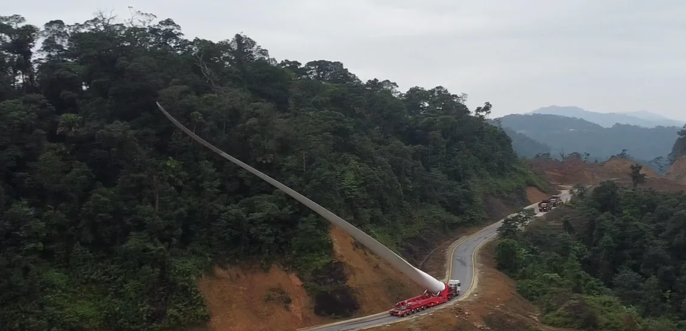
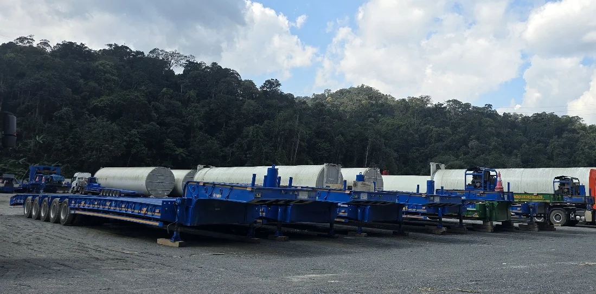

Logistics Phú Xuân
Dịch vụ & Giải pháp
Từ khảo sát tuyến đến bàn giao thiết bị, PXL xây dựng phương án theo đặc điểm kiện hàng, điều kiện hiện trường và tiến độ dự án.
Khám phá 6 dịch vụ
Vận tải siêu trường siêu trọng
Dành cho cánh turbine, đoạn tháp, nacelle và thiết bị công nghiệp có kích thước hoặc tải trọng cần phương án vận chuyển riêng.
PXL đối chiếu hồ sơ kiện hàng với cấu hình đầu kéo, moóc và phương án kê đỡ. Kế hoạch từng chuyến tính đến thứ tự nhận hàng, điều kiện tuyến và khả năng tiếp nhận tại công trường.
- Thông tin cần cung cấp
- Danh mục kiện, kích thước, khối lượng, trọng tâm và bản vẽ điểm kê hoặc chằng buộc nếu có.
- Nội dung cần thống nhất trước khi triển khai
- Cấu hình phương tiện, phạm vi bốc dỡ, các điều kiện lưu hành và thời điểm bàn giao.

Logistics dự án điện gió
Dành cho dự án cần phối hợp nhiều lô thiết bị từ cảng hoặc bãi đến vị trí lắp đặt. Một bộ turbine có thể chia thành nhiều chuyến với yêu cầu tiếp nhận khác nhau.
PXL lập kế hoạch theo cấu kiện và thứ tự lắp đặt, phối hợp lịch nhận tại cảng, khả năng trung chuyển và lịch giao đến từng vị trí. Với tuyến Việt Nam–Lào, xác định điểm bàn giao giữa các chặng và đầu mối thủ tục theo phạm vi hợp đồng.
- Thông tin cần cung cấp
- Packing list, lịch tàu hoặc lịch hàng sẵn sàng, danh sách vị trí trụ và tiến độ lắp dựng.
- Nội dung cần thống nhất trước khi triển khai
- Thứ tự giao, đầu mối mỗi chặng, điều kiện nhận hàng tại công trường và cách xử lý khi lịch thay đổi.

Khảo sát & phương án tuyến
Dành cho tuyến có khúc cua hẹp, dốc, cầu, giao cắt, chướng ngại trên cao hoặc đường vào công trường cần đánh giá trước.
PXL đối chiếu kích thước tổ hợp xe và hàng với điều kiện thực địa, ghi nhận điểm hạn chế về bán kính quay, tĩnh không và khả năng lưu thông. Các điểm cần xử lý được đưa vào phương án để xác định trách nhiệm và mốc hoàn thành.
- Thông tin cần cung cấp
- Điểm nhận và giao, tuyến đề xuất, bản vẽ tổ hợp, hồ sơ cầu đường và thông tin hiện trạng nếu có.
- Nội dung cần thống nhất trước khi triển khai
- Tuyến chính và dự phòng, phạm vi xử lý chướng ngại, đầu mối phối hợp và điều kiện xác nhận tuyến sẵn sàng.

Phương án nâng hạ thiết bị
Dành cho kiện hàng cần chuyển giữa tàu, bãi, moóc hoặc vị trí giao nhận và phải phối hợp thiết bị nâng phù hợp.
PXL phối hợp với đơn vị nâng hạ để rà soát điều kiện mặt bằng, vị trí xe, trình tự tiếp cận và bàn giao. Phương án nâng cụ thể cần được bên có trách nhiệm kiểm tra và phê duyệt trước khi thực hiện.
- Thông tin cần cung cấp
- Khối lượng, trọng tâm, điểm nâng, bản vẽ kiện hàng, mặt bằng và giới hạn thời gian thao tác.
- Nội dung cần thống nhất trước khi triển khai
- Bên cung cấp cẩu và phụ kiện, phạm vi chịu trách nhiệm, điều kiện dừng và biên bản bàn giao.

Kho bãi & trung chuyển
Dành cho lô hàng cần tập kết, chia chuyến hoặc chờ điều kiện tuyến và lịch nhận tại công trường.
PXL đề xuất điểm trung chuyển theo khả năng tiếp cận, mặt bằng và nhu cầu luân chuyển. Kế hoạch xác định vị trí đặt kiện, thứ tự nhập xuất và cách đối chiếu số lượng, tình trạng hàng ở mỗi lần bàn giao.
- Thông tin cần cung cấp
- Danh mục kiện, nhu cầu diện tích, thời gian lưu, yêu cầu bảo quản và lịch dự kiến xuất bãi.
- Nội dung cần thống nhất trước khi triển khai
- Địa điểm và khả năng tiếp nhận, trách nhiệm bảo quản, điều kiện pháp lý của địa điểm nếu áp dụng và chi phí theo phạm vi thống nhất.

Điều phối & kiểm soát rủi ro
Dành cho dự án có nhiều đầu mối phối hợp hoặc tiến độ phụ thuộc lịch tàu, thời tiết, tuyến và mặt bằng.
PXL theo dõi mốc nhận hàng, khởi hành, bàn giao và các điểm có thể làm chậm chuyến. Khi điều kiện thay đổi, đầu mối điều phối cập nhật ảnh hưởng và trao đổi phương án xử lý với các bên liên quan.
- Thông tin cần cung cấp
- Tiến độ, khung giờ vận chuyển, đầu mối từng bên, điều kiện dừng đã thống nhất và yêu cầu báo cáo.
- Nội dung cần thống nhất trước khi triển khai
- Tần suất cập nhật, thẩm quyền quyết định khi phát sinh, cách ghi nhận thay đổi và mốc giao nhận cần bảo vệ.

Trao đổi về lô hàng của bạn
Gửi thông tin kiện hàng, điểm nhận, điểm giao và lịch dự kiến để PXL trao đổi phương án.
Yêu cầu báo giá →